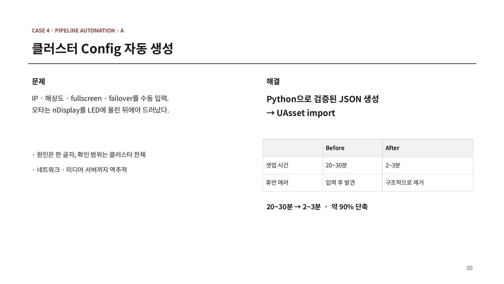

VP 파이프라인 자동화


반복 입력과 시스템 간 녹화 정렬에 드는 시간을 줄이기 위해 Python 기반 설정 생성과 다중 테이크 녹화 흐름을 구성했다. 서로 다른 프로젝트에서 진행한 자동화 사례다.
클러스터 설정 생성#
nDisplay 클러스터의 IP, 해상도, fullscreen, failover 값을 수동으로 입력했다. 오타가 LED 송출 단계에서 드러나면 네트워크와 미디어 서버까지 확인해야 했다.
Python에서 설정을 검증하고 JSON을 생성한 뒤 Unreal 자산으로 가져오도록 구성했다. 포트폴리오의 운영 기록상 셋업 시간은 2030분에서 23분으로 줄었다. 이는 해당 작업의 기록이며 모든 구성에서 같은 시간을 보장하는 값은 아니다.
이 nDisplay 자동화는 별도 프로젝트 사례다. 씬 최적화 케이스의 Pixera 송출 프로젝트와 구분한다.
다중 테이크 녹화#
Switchboard, 엔진, 모션, 페이셜 시스템을 각각 녹화한 뒤 후처리에서 맞추던 흐름을 정리했다. 마스터 PC에서 OSC로 동시 트리거를 보내고 모션캡처 마스터 타임코드와 하드웨어 gen-lock을 함께 사용했다.
4개 시스템의 녹화를 연결해 테이크 직후 현장에서 결과를 확인하도록 했으며, 「호프」 본 촬영에 적용했다. 동기화 정확도는 정량 측정하지 않았다. 육안상 어긋남이 없는 수준까지만 확인했으므로 프레임 단위 정확도를 검증했다고 표현하지 않는다.
3DGS 전처리 자동화#
Python과 OpenCV로 대용량 촬영 데이터의 전처리를 자동화했다. 360 카메라, DSLR, 드론 등으로 수집한 10,000장 이상의 이미지에서 GPS 메타데이터를 기준으로 아이레벨 학습 구간을 선별하고, 360 이미지 분할과 분산 트레이닝 흐름을 구성했다.
기록상 트레이닝 기간은 7일에서 3일로 줄었다. 3DGS 알고리즘 자체를 수정한 것은 아니며, 전처리와 데이터 선별을 다룬 작업이다. 당시 Unreal 플러그인과 LED 송출 통합이 불안정해 이 파이프라인은 본 촬영에 적용하지 못했다.